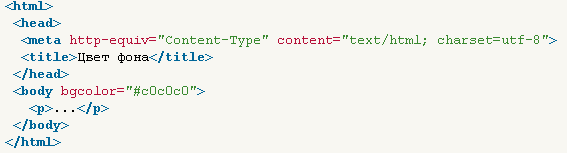
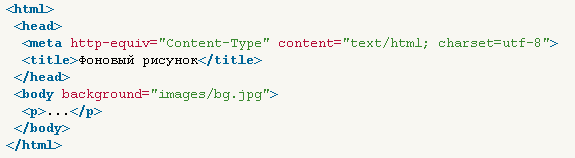
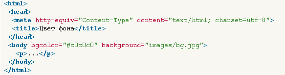
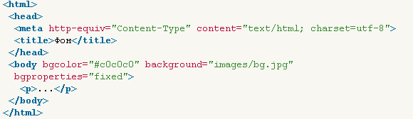

В HTML можно менять цвет фона
Цвет фона веб-страницы задается с использованием атрибута bgcolor и тега < body> .
Здесь (bgcolor="#ffffef")

Фоновый рисунок
В качестве фона можно использовать любое подходящее для этого изображение.
Фон не должен отвлекать внимание от текста, при этом должен хорошо сочетаться с
цветовой гаммой веб-страницы и быть маленьким по размеру, чтобы быстро загружаться.
Если после перечисленного вы все еще хотите добавить фоновый рисунок на страницу, следует
воспользоваться атрибутом background тега < body >

Если изображение меньше размера экрана монитора, оно будет размножено по горизонтали и вертикали.
Поскольку фоновый рисунок загружается медленнее, чем цвет фона, может получиться,
что текст не будет читаться некоторое время, пока не произойдет загрузка рисунков. То же самое
может случиться и при отключенных в браузере рисунках. Поэтому рекомендуется всегда задавать цвет
фона наряду с фоновым рисунком

Фиксированный фон
По умолчанию, при использовании полосы прокрутки, фоновый рисунок перемещается
вместе с содержимым веб-страницы. Internet Explorer позволяет сделать фон неподвижным с помощью
атрибута bgproperties="fixed" тега < body >

 Вернуться назад
Вернуться назад